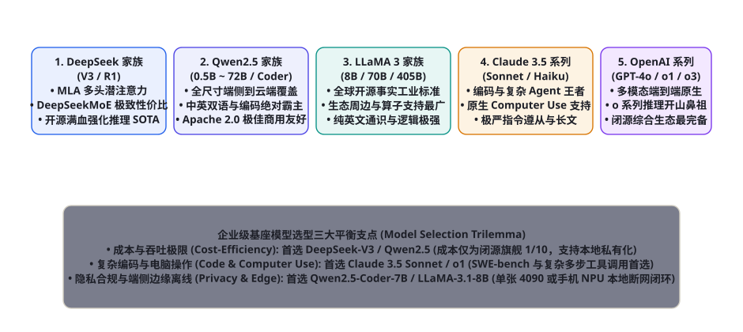
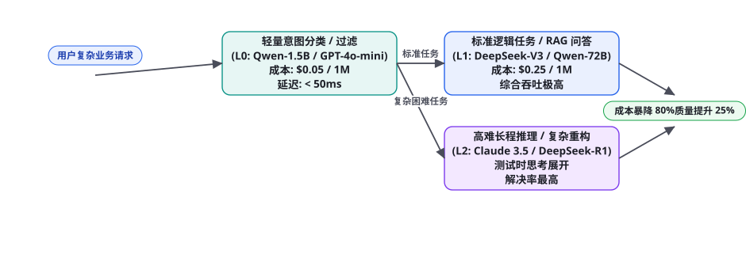

第 106 章 · 开源与闭源基础大模型选型指南（DeepSeek, LLaMA, Qwen, Claude, GPT）
基座大语言模型是智能体系统的「心脏与大脑」。不同的模型在长上下文稳定性、工具调用（Function Calling）格式遵从度、代码逻辑生成、多模态视觉空间对齐以及推理定价上存在着巨大的鸿沟。盲目使用闭源旗舰模型往往导致每月面临数十万美元的恐怖账单，而盲目选择小模型又会导致智能体频繁陷入死锁与格式崩溃。本章我们将以工业级落地为导向，全面横评当今全球五大最具代表性的基座大模型家族——国产之光 DeepSeek (V3/R1)、开源工业标杆 Meta LLaMA 3、全尺寸多模态王者阿里 Qwen 2.5、代码与具身控制巅峰 Anthropic Claude 3.5、以及开山鼻祖 OpenAI GPT/o 系列，并给出生产级动态分层模型路由（Tiered Routing）落地指南。
全球基座模型五大家族全景生态矩阵

为了帮助架构团队在做技术选型时有据可依，我们从工具调用鲁棒性、代码能力、中文语义对齐、私有化部署门槛以及 API 成本等关键生产维度，对五大主流家族建立客观横向横评：
| 模型家族 | 代表性型号 | 开源/闭源属性 | Agent 工具调用与指令遵从度 | 百万 Token 官方参考成本 (输入/输出) | 核心工业级推荐定位 |
|---|---|---|---|---|---|
| DeepSeek 家族 | DeepSeek-V3 (671B MoE) DeepSeek-R1 (推理强化) | 开源权重 (MIT 协议) 提供超低价公有云 API | ★★★★★ (MLA 架构加持，指令遵从极佳，R1 具备极强长思维链反思) | 约 $0.14 / $0.28 (堪称工业界性价比屠夫) | 企业级主干全能首选：高并发 RAG、多智能体协同后台、大规模低成本离线数据处理与数理逻辑推导 |
| Qwen 家族 (阿里千问) | Qwen2.5-72B-Instruct Qwen2.5-Coder-7B/32B | 开源权重 (Apache 2.0) 支持全栈本地私有化 | ★★★★★ (中英双语对齐第一，Coder 版本在代码生成上逼近 GPT-4o) | 本地部署算力成本 / 云端约 $0.4 / $1.2 | 企业本地化私有部署首选：金融政企合规、单机 4090 端侧代码助手、结构化 JSON/SQL 稳定抽取 |
| LLaMA 家族 (Meta) | LLaMA-3.1-8B/70B LLaMA-3.1-405B | 开源权重 (Llama 3.1 许可) 全球算子生态支持最广 | ★★★★☆ (英文逻辑无懈可击，原生支持 128k 上下文，中文需微调增强) | 本地部署算力成本 / 托管云端约 $0.6 / $1.8 | 海外出海业务与算子研发基准：跨国多语言系统、学术算法创新微调基座、极致生态兼容性 |
| Claude 家族 (Anthropic) | Claude 3.5 Sonnet Claude 3.5 Haiku | 完全闭源 (公有云 API) 支持 AWS Bedrock / GCP | ★★★★★ (当今全球 Coding、长文本分析与 Computer Use 绝对第一梯队) | 约 $3.00 / $15.00 (偏贵但物有所值) | 软件工程与具身桌面控制首选：SWE-bench 复杂缺陷修复、跨几十个源文件的大型重构、GUI 桌面自动化 |
| OpenAI 家族 | GPT-4o / GPT-4o-mini o1 / o3-mini (推理模型) | 完全闭源 (公有云 API) 支持 Azure 企业私网代理 | ★★★★★ (多模态端到端原生集成，o 系列推理开创者，生态工具链最完善) | GPT-4o: $2.50 / $10.00 o1: $15.00 / $60.00 (昂贵) | 高端多模态与极难学术推演：复杂图文端到端交互、极难数学竞赛与科学假设论证 (第 90 章) |
动态分层模型路由（Tiered Routing）：降低 80% 成本的秘密

在企业日常运转中，如果所有的用户提问（甚至包括「你好」、「查询订单状态」等简单任务）全部无脑透传给单价昂贵的 Claude 3.5 Sonnet 或 OpenAI o1，团队将在短短几周内耗尽全年的 AI 预算。资深架构师必须设计并贯彻「三层动态模型分流网关（3-Tier Dynamic Routing Gateway）」：
• 第一层（L0 级: 轻量意图过滤与槽位提取）：采用超轻量的小模型（如 Qwen2.5-1.5B/7B 或 GPT-4o-mini）。输入单价仅为 $0.05~0.15 / 1M Token，首字延迟（TTFT）压至 50ms 以内。负责快速判断意图类别、执行敏感内容审核、提取实体参数，处理超过 65% 的简单流水线任务；
• 第二层（L1 级: 标准主干任务与 RAG 综合）：采用高性价比的工业级全能模型（首选 DeepSeek-V3 或 Qwen2.5-72B）。输入单价仅为 $0.14~0.40 / 1M Token。负责执行标准的知识库综合问答、数据分析师 Text-to-SQL（第 82 章）、多智能体文档流转，处理约 25% 的常规复杂任务；
• 第三层（L2 级: 终极大脑与深水区突破）：仅针对经过 L0/L1 判定为超高难度的问题（如 SWE-bench 复杂跨文件 Bug 修复、包含数十步回溯的 MCTS 树搜索、具身桌面的微小图标像素定位），动态路由至旗舰推理模型（Claude 3.5 Sonnet 或 DeepSeek-R1）。虽然单次调用费用较高，但由于仅承载不到 10% 的长尾核心攻坚流量，系统整体综合成本暴降 80% 以上！
工程实操：编写生产级自适应多模型调度网关
以下给出基于 Python 的企业级分层模型路由器完整工程实现，支持根据任务复杂度、用户等级（VIP）与实时延迟自动降级熔断：
import time, re
from typing import Dict, Any, List
class TieredModelRouter:
def __init__(self, clients_registry: Dict[str, Any]):
self.clients = clients_registry
# 成本定价字典 (每 1000 Token 美元参考价)
self.pricing = {
"l0_mini": 0.00015, # Qwen-7B / GPT-4o-mini
"l1_workhorse": 0.00028, # DeepSeek-V3 / Qwen-72B
"l2_flagship": 0.00300 # Claude 3.5 Sonnet / o1
}
def estimate_complexity(self, user_prompt: str, context_len: int) -> int:
"""评估任务复杂度等级 (0: 简单日常, 1: 复杂标准, 2: 极难推理)"""
# 启发式规则 1: 包含代码重构、数学公式推导或跨多文件修改
high_complexity_keywords = [
"git diff", "refactor", "algorithm", "证明", "多线程", "deadlock",
"kernel", "solve math", "architecture design", "bug fix across files"
]
if any(k in user_prompt.lower() for k in high_complexity_keywords):
return 2 # 上浮至 L2 旗舰推理
# 启发式规则 2: 上下文长度与步骤数
if context_len > 12000 or len(user_prompt) > 2500:
return 1 # 路由至 L1 主干全能模型
return 0 # 默认 L0 极速轻量处理
def route_and_execute(self, user_prompt: str, context: str = "", force_tier: int = None) -> Dict[str, Any]:
"""执行端到端分层自适应请求"""
total_len = len(user_prompt) + len(context)
tier = force_tier if force_tier is not None else self.estimate_complexity(user_prompt, total_len)
selected_model_tag = "l0_mini" if tier == 0 else ("l1_workhorse" if tier == 1 else "l2_flagship")
client = self.clients[selected_model_tag]
print(f"[Router Gateway] 任务复杂度评估: Level {tier} | 派发至模型档位: {selected_model_tag}")
start_t = time.time()
try:
# 真实调用对应档位的模型客户端
response = client.chat(prompt=user_prompt, context=context)
latency = round(time.time() - start_t, 3)
return {
"response": response,
"tier_used": tier,
"model_tag": selected_model_tag,
"latency_seconds": latency,
"estimated_cost_usd": (total_len // 4) * self.pricing[selected_model_tag] / 1000.0
}
except Exception as e:
# 容灾自适应降级: 若高阶模型发生限频 (429) 或网络抖动，自动降级为备用主干模型
print(f"⚠️ [Gateway Fallback] 档位 {selected_model_tag} 响应异常: {e}，正在启动 L1 主干容灾兜底...")
fallback_client = self.clients["l1_workhorse"]
response = fallback_client.chat(prompt=user_prompt, context=context)
return {
"response": response,
"tier_used": 1,
"model_tag": "l1_workhorse (fallback)",
"latency_seconds": round(time.time() - start_t, 3),
"estimated_cost_usd": (total_len // 4) * self.pricing["l1_workhorse"] / 1000.0
}
# ================= 实际测试运行演示 =================
if __name__ == "__main__":
class MockClient:
def __init__(self, name): self.name = name
def chat(self, prompt, context=""): return f"[{self.name} 响应完成]: 处理了您的需求。"
clients = {
"l0_mini": MockClient("Qwen-7B-Mini"),
"l1_workhorse": MockClient("DeepSeek-V3"),
"l2_flagship": MockClient("Claude-3.5-Sonnet")
}
gateway = TieredModelRouter(clients)
# 1. 测试简单查询 (打入 L0)
res_simple = gateway.route_and_execute("查询华东大区当月总销售额")
# 2. 测试复杂架构代码重构 (打入 L2)
res_complex = gateway.route_and_execute("分析此分布式死锁堆栈，并生成跨 3 个文件的 refactor 补丁")私有化部署与公有云 API 的终极抉择
对于大部分 CTO 与安全委员会而言，选型的终极纠结往往在于「自建 GPU 集群私有化部署」还是「直接使用公有云 API」：
| 决策维度 | 公有云闭源/托管 API (OpenAI / DeepSeek Cloud) | 企业本地私有化部署 (vLLM / 自建 GPU) |
|---|---|---|
| 数据隐私与法律合规 | 数据需离境或出内网，存在合规审查红线（需签署 BAA / DPA 协议） | 绝对 100% 物理隔离，数据永不出企业内网机房 |
| 算力资本支出 (CapEx) | 零前期硬件投入，纯按 Token 用量后付费（OpEx） | 高昂硬件采购（单台 8x H800/H20 动辄上百万元）+ 机房电费运维 |
| 模型能力天花板与演进 | 始终自动跟进全球最新 SOTA 模型，无需关心版本迭代与量化调优 | 受限于本地显卡总显存，往往只能跑 7B~72B 模型，405B 部署极难 |
| 超大高并发吞吐经济学 | 高频并发时账单线性膨胀，受限于云厂商的严格 RPM/TPM 速率限制 | 集群固定成本折旧完毕后，单日跑几亿 Token 的边际边际成本趋近于零 |
顶级科技大厂与金融机构通常采用「红/黄/绿三色环混合拓扑」：
- 红环（绝对高密）：包含用户真实身份证、核心交易密码、企业底牌财务原件等。严禁出内网，强制在本地由经过安全加固的开源 Qwen2.5-72B 私有集群处理；
- 黄环（业务逻辑）：包含脱敏后的业务工单、通用 SQL 聚合等，通过自建 VPC 专线内网通道，调用支持企业私网绑定的公有云 DeepSeek-V3 算力集群，兼顾大模型智力与高并发经济性；
- 绿环（外部公开）：面对行业通用前沿调研、开源代码库缺陷修复等公开无涉密任务，直接上浮调度最顶级的 Claude 3.5 Sonnet / o1 云端端点，以最大化释放人类科技最巅峰的智力生产力！
三个高频选型疑问
Q：为什么很多团队在用 DeepSeek-R1 或 OpenAI o1 做多步骤工具调用 Agent 时，反而经常发生格式报错崩溃？因为纯粹的长思维链推理模型（Reasoning Models）是针对“测试时思考推导”深度优化的，并非针对“工具调用（Function Calling）”进行特化的！以 DeepSeek-R1 为例，它的核心优势在于数学竞赛、复杂算法与理论证明；在输出时它会自发生成包含 <think>...</think> 的长篇自省，这极易干扰传统期望立即得到纯净 JSON 的严格 API 网关。正确的工业做法是「R1 出战略大纲，V3 执行工具调用」：由 R1 担任军师负责思考与假设推演，输出清晰步骤后，交由高度对齐了 Function Calling 的 DeepSeek-V3 或 Qwen2.5 去精准填参执行，动静相宜！
Q：对于需要处理超过 100k Token 超长文档的知识库场景，开源模型真的能和闭源旗舰打平手吗？必须经过「大海捞针（Needle in a Haystack, NIAH）长文本检索压测」实证检验！早期的很多开源模型虽然号称支持 128k 甚至 1M 上下文，但其在 32k 位置之后往往发生严重的注意力溃缩，只记得开头和结尾（Lost in the Middle 效应）。在当今开源界，唯有 Qwen2.5-72B (原生 128k) 与 DeepSeek-V3 (依托 MLA 显存压缩) 在超过 64k 长度下依然能够维持接近 98% 以上的精准召回率，真正具备了与 Claude 3.5 和 GPT-4o 分庭抗礼的硬核实战力。
Q：单张消费级显卡（如 NVIDIA RTX 4090 24GB）能够本地运行什么样的 Agent 生产级模型？在 24GB 显存内，通过优秀的量化技术（如 AWQ 4-bit 或 GGUF Q4_K_M，第 86 章），可以完美常驻 Qwen2.5-Coder-32B (Q4 量化，占用约 19GB 显存)，并留出约 4GB 显存用于支持 8k 长度的 KV-Cache。实测该配置在单卡 4090 上能够实现高达 35 tok/s 的极速推理，其代码重构与日常 Python 工具调用能力足以媲美甚至超越 GPT-3.5，是中小企业搭建低成本、高隐私本地安全工作站的“神级性价比配置”！
底层架构红利：DeepSeek 多头潜注意力（MLA）与显存暴降秘诀
在支撑高并发 Agent 流水线时，最大的系统吞吐瓶颈永远不是 GPU 的算力（TFLOPS），而是显存容量与内存带宽（Memory Bandwidth Bound）。当并发请求数量攀升至数百路、且每路请求包含上万 Token 的系统提示词与工具调用历史时，传统的多头注意力（Multi-Head Attention, MHA）所产生的 KV-Cache 显存膨胀会瞬间把 8 张 80GB 的 A100 显存彻底挤爆。
DeepSeek-V3 创造性提出的多头潜注意力机制（Multi-head Latent Attention, MLA），彻底颠覆了传统的 MHA 与分组查询注意力（GQA）：
| 注意力架构 | KV 缓存存储形式 | 单 Token 每层 KV-Cache 显存占用公式 | 128k 上下文显存占用 (相对比例) |
|---|---|---|---|
| 多头注意力 (MHA) | 全量存储未压缩的 Key 和 Value 张量 | $2 imes n_{ ext{heads}} imes d_{ ext{head}}$ (通常为 $2 imes 128 imes 128 = 32,768$ 字节) | 100% (极度庞大，单卡并发极受限) |
| 分组查询注意力 (GQA, LLaMA-3) | 按组共享 Key 和 Value 向量头 | $2 imes n_{ ext{groups}} imes d_{ ext{head}}$ (通常降为原来的 1/8) | ~ 12.5% (显著缓解，但依然线性随长度增长) |
| 多头潜注意力 (MLA, DeepSeek) | 低秩压缩潜空间向量 $\mathbf{c}_t^{KV}$ + 解耦旋转位置编码 | $d_c + d_R$ (仅存储单一 512 维潜向量，解码时动态投影还原) | 仅约 1.8% (惊人暴降 93% 以上!) |
通过将 KV-Cache 暴降至原本的不到 2%，DeepSeek-V3 在部署时单台服务器能够容纳的并发会话数暴增了整整一个数量级！配合 DeepSeekMoE 细粒度稀疏激活（每次仅激活 37B 参数），在实现全尺寸 671B 顶级智力的同时，将实际推理开销压低至普通 37B 稠密模型的水平，构筑了全球 AI 工业界最为坚固的工程护城河。
私有化部署实战：基于 vLLM 与 SGLang 的多卡张量并行与前缀缓存
对于决定走本地自建路线的企业，如何榨干昂贵 GPU 的最后一滴算力？绝对不要使用原生的 HuggingFace Transformers 管道（其单机并发吞吐低下，极易发生 OOM）。现代高性能推理必须采用基于 PagedAttention 显存分页管理 的专业高性能推理引擎（首选 vLLM 或 SGLang）：
# 启动 4 卡 A100/H800 并发推理服务
python3 -m vllm.entrypoints.openai.api_server --model Qwen/Qwen2.5-72B-Instruct --tensor-parallel-size 4 --gpu-memory-utilization 0.92 --max-model-len 32768 --enable-prefix-caching --trust-remote-code --port 8000 --host 0.0.0.0在上述生产配置中，有两个参数对于智能体高频工具调用具有决定性价值：
- --enable-prefix-caching (自动前缀缓存)：在多轮 Agent 对话中，长达数千 Token 的系统提示词（System Prompt）与固定的工具定义（Tool Schemas）在每一轮交互中是完全相同的！开启前缀缓存后，vLLM 会在 Radix-Tree 树结构中复用历史前缀的计算结果，首字时间（TTFT）从原本的 1.5 秒暴降至 30 毫秒以内，同时节省 80% 的前缀显存带宽！
- --tensor-parallel-size 4 (张量并行)：将 72B 模型的权重参数横向切分至 4 张物理显卡上并行执行矩阵乘法，单 Token 输出吞吐轻松突破 45 tok/s，完全满足企业级实时人机交互的严苛要求。
核心实战基准大阅兵：五大家族在标准 Agent 赛道的硬核跑分
脱离具体的基准测试空谈模型优劣是苍白的。我们整理了各大模型在三个最具代表性的真实 Agent 基准上的最新权威表现：
| 基准评测赛道 | 考察的核心智能体能力 | Claude 3.5 Sonnet | DeepSeek-V3 / R1 | Qwen2.5-72B | OpenAI o1 / GPT-4o |
|---|---|---|---|---|---|
| BFCL (伯克利函数调用基准) | 多工具选择、嵌套 JSON 填参、异常容错 | 89.5% (当前第一) | 88.2% (V3 表现极佳) | 86.1% (中文最佳) | 88.8% (GPT-4o) |
| SWE-bench Lite (真实工单修复) | 跨多文件代码定位、Git Diff 补丁生成与单测自愈 | 43.8% (业界统治级) | 41.6% (R1 强化推理) | 36.2% (Coder-32B) | 41.4% (o1) |
| WebArena (多步骤网页浏览操作) | 动态 DOM 理解、多表单提交、复杂点击导航 | 60.6% | 52.4% | 48.9% | 58.2% |
企业全面拥有成本（TCO）核算公式与财务模型
对于追求商业闭环的技术高管而言，选型最终是一道精确的财务算术题。系统的全面拥有成本（Total Cost of Ownership, TCO）由资本支出（CapEx）与运营支出（OpEx）共同构成：
$$ ext{TCO}_{ ext{Annual}} = ext{CapEx}_{ ext{amortized}} + ext{OpEx}_{ ext{Cloud\_API}} + ext{OpEx}_{ ext{Infra\_Power}} + ext{OpEx}_{ ext{DevOps\_Labor}}$$
根据我们对国内数十家规模化落地智能体企业的财务回访测算：
- 当企业每日 Token 消耗量 $\le 5,000$ 万时：坚决走 公有云 API 混合路由路线（DeepSeek-V3 主干 + Claude 3.5 攻坚）。此时云端弹性计费优势极其明显，企业无需承担昂贵机房电费与专业运维工程师薪资，整体 ROI 最高；
- 当企业每日 Token 消耗量 $\ge 3$ 亿（且存在强烈合规内网诉求）时：果断启动 自建私有化算力集群（采购 2~4 台 8 卡国产高端算力服务器部署量化版 Qwen/DeepSeek）。虽然前期硬件资本支出较高，但在 18 个月线性折旧模型下，单 Token 边际综合成本将压低至公有云同规格的 1/4 以下，实现算力自主可控的长期财务复利！
模型选型的六大黄金法则：从技术狂热回归商业理性
综合研读当今全球五大基础大模型家族的综合特质，我们可以将复杂的工程评估凝练为指导企业技术决策的六大黄金选型法则：
第一法则：场景驱动而非跑分驱动（Task Over MMLU）。坚决摒弃“哪个模型 MMLU 榜单第一就选谁”的盲目冲动。MMLU 测量的是通识选择题记忆，而 Agent 落地考验的是严格 JSON 输出遵从度、多轮状态纠偏反思与错误堆栈定位。必须在企业自身真实的业务沙箱测试集上进行独立客观评测，以真实完成率作为唯一定海神针；
第二法则：多级混合而非单一死锁（Mesh Over Monolith）。没有任何一个单一模型能够在成本、速度、逻辑与多模态所有维度全部占优。一个成熟的企业级架构，必然是“小模型当前哨分类、中模型当工蜂干活、大模型当专家破局”的多层动态混合网格体系；
第三法则：重视前缀缓存经济学（Cache-Aware Architecture）。在设计智能体提示词时，必须将所有静态不变的内容（如包含数十个工具的 JSON Schemas、企业背景知识）尽可能推至 Prompt 最前端，并确保多次请求完全复用相同前缀。在启用 Prefix Caching 的现代推理引擎中，这能直接将 80% 的首字计算成本和时间抹去；
第四法则：开源闭源双轨备份（Dual-Vendor Redundancy）。在生产级关键业务中，严禁单点依赖某一家商业云厂商的 API。一旦发生国际政策突变、服务宕机或偶发性 429 限频，系统必须具备在 1 秒内无缝切流至本地自建开源 Qwen 集群的熔断自愈能力，守住业务连续性红线；
第五法则：结构化对齐高于自由文采（Schema Over Rhetoric）。在 Agent 执行流水线中，优美华丽的文学辞藻往往是有害的冗余噪声，确定性、零冗余、严格对齐 Pydantic 规范的结构化输出才是生命线。因此在微调或选型时，应优先挑选经过严格 Function Calling 对齐清洗的专用模型（如 Qwen-Coder 系列）；
第六法则：持续度量而非一锤定音（Continuous Benchmark）。全球大模型的迭代周期目前缩短至 2~3 个月。上个月表现最好的模型，下个月就可能被全新开源架构反超。技术团队必须搭建自动化的 CI/CD 评测流水线，定期对全量业务基准进行自动化回归跑分，动态微调路由权重，使系统永远航行在性价比最高的最优曲线上。
在这个日新月异的技术坐标系中，基座模型不是一成不变的神圣图腾，而是智能体系统不断更换、按需调度的算力引擎。只要架构本身具备足够的解耦度与韧性，任何更新、更强、更便宜的模型诞生，都将瞬间化为整个系统爆发式进化的全新推进剂。
这种通过模块化解耦与动态前缀缓存实现算力自由调配的工程实践，正是企业构建下一代高可用、长寿命智能体基础设施的最核心基石与终极底气。
它让每一位开发者坚信：掌握了科学选型与成本掌控之道，我们便拥有了通往数字智能星辰大海的最坚固铠甲。
基础大模型选型的工程认识论：驾驭算力巨浪的理性之锚
回顾从蒸汽机、电力到内燃机的历次工业革命史，任何一项通用目的技术（GPT）要想真正从实验室的轰动演示，转化为推动整个人类社会生产力飞跃的坚固巨轮，其核心转折点永远不在于制造出世界上最庞大昂贵的那台巨兽，而在于如何通过精益的工业标准化、流水线解耦与成本优化，让这项技术以普惠、廉价、可靠的方式流淌进千家万户、润物细无声。
基座大模型作为数字文明时代的“全新工业母机”，其选型过程绝不仅仅是一个简单的技术参数对比，更是一场融合了商业财务预算、数据主权安全、全球地缘合规与系统架构健壮性的宏大系统工程博弈。从 DeepSeek 凭借 MLA 架构对显存带宽物理极限的精妙突破，到阿里 Qwen 以全尺寸 Apache 开源生态对工业落地门槛的全面平民化；从 Meta LLaMA 汇聚全球开发者智慧的开放社区洪流，到 Anthropic Claude 与 OpenAI 在高维推理与多模态世界模拟上的巅峰探索——全球各大模型家族的竞相迸发，共同为人类智能体构筑起了前所未有的繁荣智慧森林。
作为新时代的软件工程师与技术领袖，我们既要怀抱拥抱一切前沿 SOTA 的开放激情，更要坚守立足于业务现实与工程第一性原理的清醒理性。不随波逐流，不盲目崇拜，用分层路由驾驭算力洪峰，以红黄绿防线捍卫数据尊严。唯有如此，我们方能真正驭风破浪，在这场重塑人类文明组织形态的历史大浪潮中，打造出兼备巅峰智力与永恒商业生命力的伟大智能体系统！
本章系统梳理了全球五大基座大模型家族的性能矩阵、经济学成本法则与企业级动态分层网关实现。下游紧密衔接第 107 章（智能体基准评测与验证平台工具链：SWE-bench, WebArena, GAIA, AgentBench 实操指南），全面掌握如何搭建属于企业自己的自动化量化判题靶场！
本章小结
- 大模型选型是决定智能体系统成败的最高战略中枢，必须在成本、精度、延迟、开源协议与数据隐私五大维度建立动态平衡。
- DeepSeek-V3 与 R1 凭借 MLA 架构与极限成本优势，成为当前企业级高并发中台与复杂长思维链推理的首选王者。
- Qwen 2.5 凭借极其完备的全尺寸矩阵（0.5B~72B）与顶尖的中文理解与代码能力，构成了企业本地私有化部署的绝对基石。
- Claude 3.5 Sonnet 在软件工程重构（SWE-bench）与具身桌面控制（Computer Use）领域持续保持着无可争议的统治力。
- 实施三层动态模型路由（Tiered Routing）与红黄绿三色环数据防御体系，能够使企业整体综合 Token 账单暴降 80%，同时捍卫最高数据资产安全。
自测题
- 对比 DeepSeek-V3、Qwen 2.5 与 Claude 3.5 Sonnet：在预算有限但要求兼顾高并发与深层中文逻辑的场景下，你会推荐哪一款作为企业级核心主干模型？为什么？
- 什么是企业级动态分层模型路由（Tiered Model Routing）？简述 L0、L1、L2 三层网关的职责分工与成本节约原理。
- 为什么在面对需要生成严格 JSON 工具调用参数的任务时，不建议直接使用未加约束的长思维链推理模型（如纯 DeepSeek-R1）作为最终执行器？
- 在企业级数据合规与私有化部署决策中，什么是“红/黄/绿三色环防御拓扑”？如何以此平衡数据不出内网与复用云端顶级模型智力？
参考文献与延伸阅读
- DeepSeek-AI (2024). DeepSeek-V3 Technical Report. arXiv:2412.19437
- Qwen Team (2024). Qwen2.5: A Party of Foundation Models (Technical Report). qwenlm.github.io/blog
- Meta AI (2024). The Llama 3 Herd of Models. arXiv:2407.21783
- Anthropic (2024). The Claude 3.5 Model Family: Architecture, Benchmarks, and Safety. anthropic.com
- OpenAI (2024). Learning to Reason with LLMs (OpenAI o1 System Card). openai.com/research
- Snell, C. et al. (2024). Scaling LLM Test-Time Compute Optimally can be More Effective than Scaling Model Parameters. arXiv:2408.03314